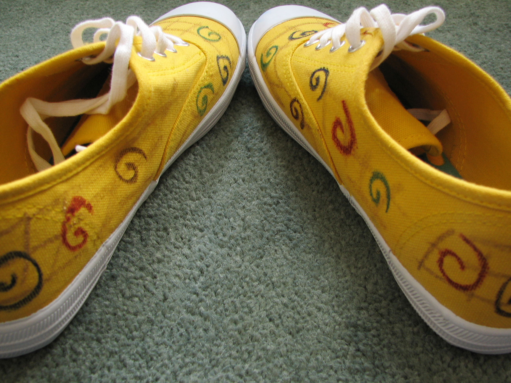

Keith Yang
Brought to you by Keith Yang
-py
code = """
#Python 2.x:
python -m SimpleHTTPServer
#Python 3.x:
python -m http.server 8000
"""
== formatters.code('bash', code)
#Python 2.x:
python -m SimpleHTTPServer
#Python 3.x:
python -m http.server 8000
$ plimc -H index.plim -o index.html